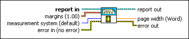
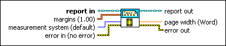

Set Report Margins VI
Owning Palette: Report Layout VIs
Requires: Base Development System
Sets the margins of the specified report.

 Add to the block diagram Add to the block diagram |
 Find on the palette Find on the palette |
Owning Palette: Report Layout VIs
Requires: Base Development System
Sets the margins of the specified report.

| Add to the block diagram |
Find on the palette |
 |
report in is a reference to the report whose appearance, data, and printing you want to control. Use the Create Report VI to generate this LabVIEW class object. | ||||||||
 |
margins sets the size of the page margins. The default is 1.00 for each margin. If the margins are smaller than the minimum margins for the printer, the VI returns an error.
| ||||||||
 |
measurement system sets the units of measurement for the margins.
|
||||||||
 |
error in describes error conditions that occur before this node runs. This input provides standard error in functionality. | ||||||||
 |
report out is a reference to the report whose appearance, data, and printing you want to control. You can wire this output to other Report Generation VIs. | ||||||||
 |
page width (Report Generation Toolkit) reports the width of the page after the VI has set the margins. The VI sets the margins in the units of measurement specified in measurement system. The VI ignores this input for HTML, standard, or Excel reports. | ||||||||
 |
error out contains error information. This output provides standard error out functionality. |